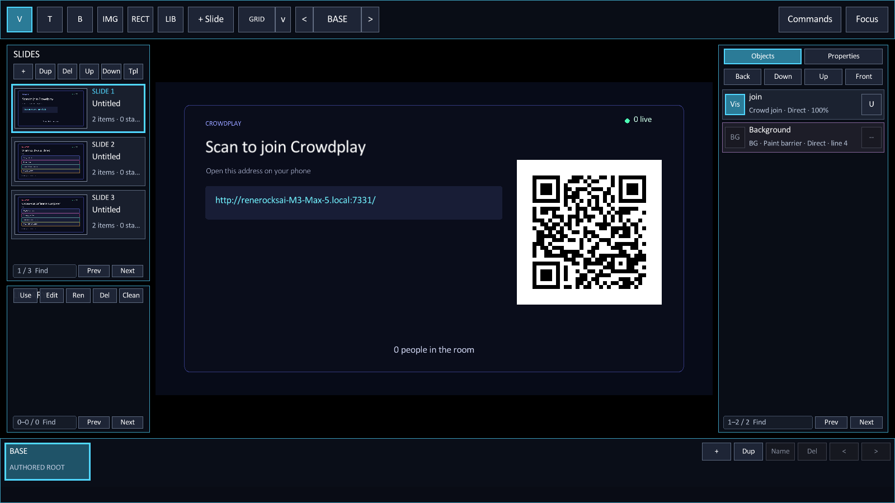
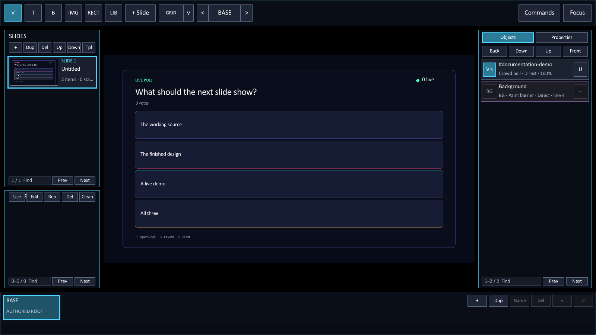
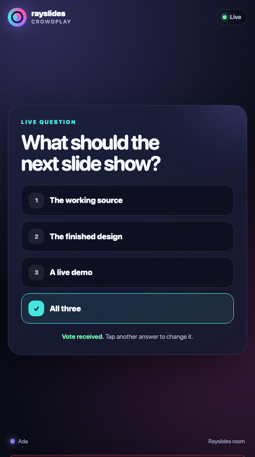
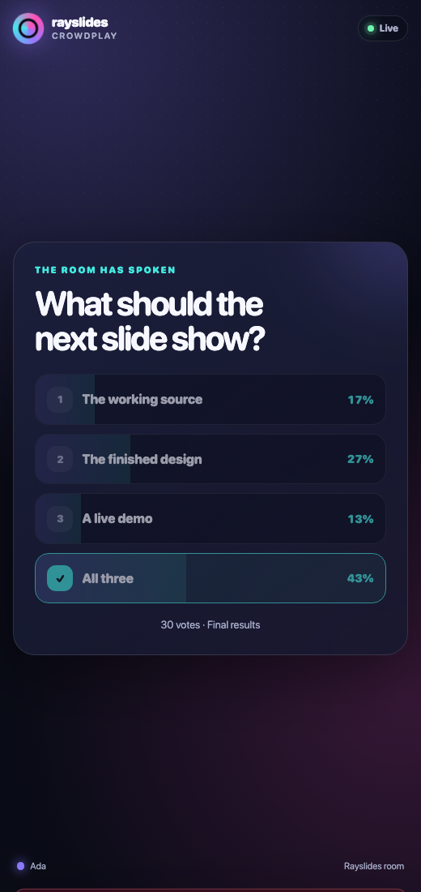

Crowdplay
Run a poll on the local network.
Audience phones join through a QR code. They need a browser, but they need no app or account.
Add a join slide
Add one Crowdplay join panel to a slide.
@slide
@bg color=#070b18ff
@crowd join x=100 y=80 w=1720 h=920
Scan to join Crowdplay
Add a poll
Give each poll a unique ID. Put the question first, then add one choice per bullet.
@slide
@bg color=#070b18ff
@crowd poll id=next-slide open=true x=100 y=80 w=1720 h=920
What should the next slide show?
- The working source
- The finished design
- A live demo
- All three
Vote from a phone
The audience page shows one active question. A person can change their vote while the poll stays open.


Control the poll
| Key | Action |
|---|---|
| O | Open the poll or lock it. |
| V | Reveal the distribution or hide it. |
| R | Remove the votes from the active poll. |
Poll IDs
A browser can change its vote while the poll is open. The stable poll ID keeps each vote tied to the correct question.
Use letters, digits, hyphens, or underscores. Keep the ID at 48 bytes or fewer.
A deck supports 32 polls. One poll supports eight choices and 512 active participants.
Use Crowdplay in a morph state
The poll ID also acts as a morph target. Declare the poll before the first morph state.
@crowd poll id=architecture open=true x=100 y=80 w=1720 h=920
What should we build?
- A compiler
- A moon base
@state(morph) duration=0.6
@set architecture x=980 y=110 w=840 h=720The panel keeps its audience state while it moves or fades.
Set the network address
Crowdplay uses port 7331 by default. Phones and the presenting computer must use the same network.
zig-out/bin/rayslides talk.sld \
--crowd-host=192.168.1.42 \
--crowd-port=7331Set an explicit local address when mDNS does not work. Windows requires a local network address.
Use --no-crowd to disable the server.
The local firewall must allow the selected port. The address localhost works only on the presenting computer.